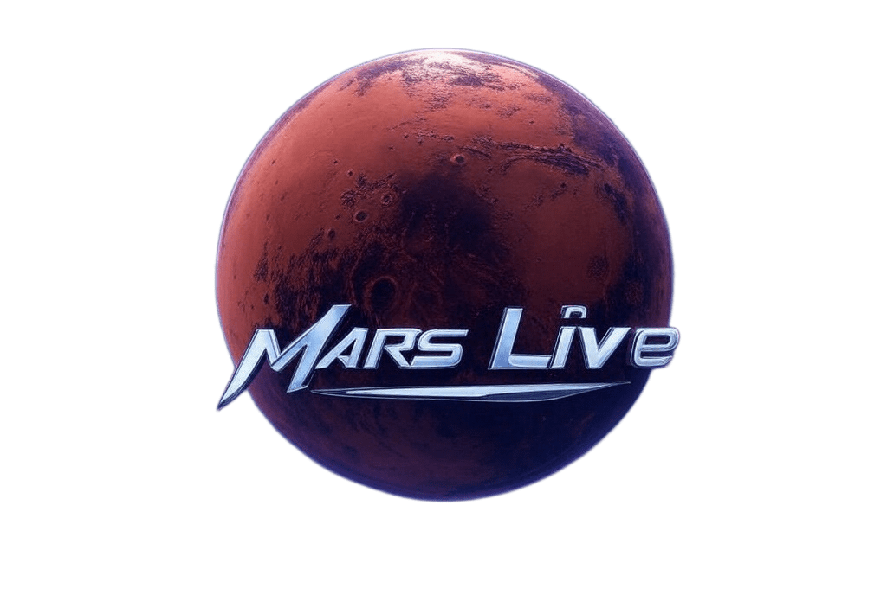

ISS Current Location
Loading...
Mars Weather
Loading...
Mars Sol Date
Loading...
Earth-Mars Distance
Loading...

Mars News
Did You Know?
Loading fact...
Loading...
Loading...
Mars Mission Countdown
Loading...
Next Launch: Starship Mars 2026
Hi, I'm Cristian, a space enthusiast and developer passionate about Mars exploration and Space! --- This is the Alpha Version of the Mars Live News APP --- Stay tuned for more updates and features! Don't forget to like and subscribe!